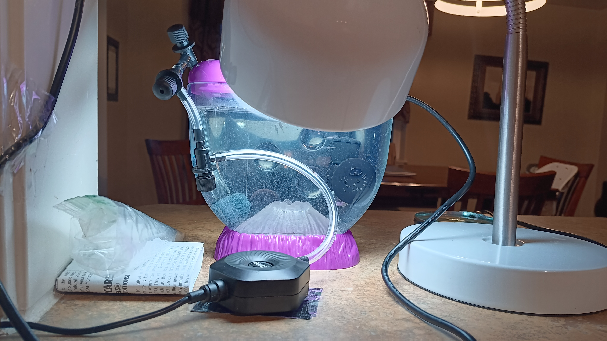

New Furniture!
February 2, 2025
What a strange week!
First, the Big Thing came and fed us. Well, he didn't actually feed us; the Small Thing did. The Small Thing is still incomprehensibly huge, but he's about half the size of the Big Thing. The Small Thing is also the one who names all the sea monkeys! But he got bored naming my siblings and me pretty quickly, so he just started making random sounds as he pointed at each one of us.
Personally, I like being named Kin! Am I bothered that he put so little effort into my name? Maybe a little, but that's neither here nor there.
Anyway, just a day after that, the Big Thing came home with two boxes, and for a couple hours he was fiddling with these gigantic contraptions. First, he put in the black pill-thing with the shiny bulb on the bottom. And can you believe it? It started to get warm! Pretty soon the whole tank was feeling super nice.
As we were basking in the warmth, the Big Thing was putting the other contraption together. First, he put in the big round rock with a tube attached to it, and a little black twisty thing on the end. Then all of a sudden, the rock EXPLODED with bubbles! It was pretty scary, it sent a bunch of us flying... even the adult sea monkeys were thrown around the tank!
Thankfully, the Big Thing took it out and added another twisty thing to the tube, and then a third when that was too much. Check it out:
If that's what it takes to keep us safe...
By the last try, the rock was just letting out a couple little trickles of bubbles... and it was kind of fun! Now we can go over and ride the current up to the top of the tank, but we don't have to. And I can already tell what it does: it's adding more oxygen to the water! Not the bubbles themselves, but the current that goes around the tank is getting replenished at the surface. I can feel the difference already, it's so much easier for my new legs to swim with all this oxygen!
Oh yeah, did I mention? I grew a couple new legs recently. I don't swim as smoothly as the adults yet, but I'm starting to look like one! I also have the "gut line" that lets you know if I'm eating enough. Sea monkeys are see-through, so that means you can see our digestive system. If it's clear, that mean's we're hungry, and if it's dark, that means we're full! Don't you wish it was that easy for humans?